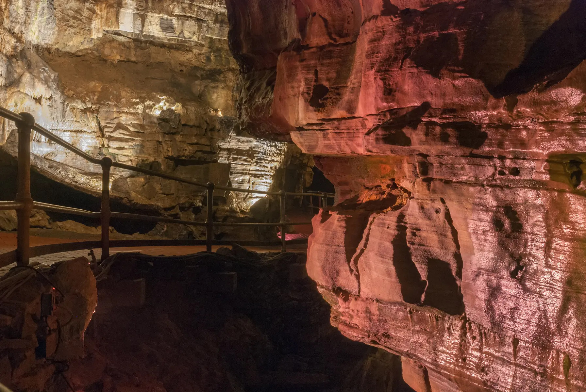

SCHOHARIE COUNTY · UNDERGROUND DAY
Howe Caverns With Kids: The Underground Day That Respects the Stairs
The cave is the main event: 90 minutes, 139 stairs, a boat ride and a steady 52°F. Book the right tour, carry almost nothing, and do not turn the gift shop into a second expedition.

Who this day fits—and who should skip it
Good fit: school-age kids who like geology, caves, boats, unusual spaces or a guided experience with a clear beginning and end. It also works when surface weather is mediocre because the cave temperature stays stable. Skip or simplify: anyone who cannot safely manage the posted stairs and walking distance, families who need a wheelchair or stroller in the cave, children who panic in enclosed or dim spaces, people unable to follow a group pace, or anyone arriving without the required footwear.
This is a different kind of family challenge from the exposed gorge at Watkins Glen or the overlook-linked day at Letchworth. Here the route, temperature and pace are controlled. That predictability is useful, but it also means there is no easy midway exit.
The current facts that decide the day
- Address: Howe Caverns lists 255 Discovery Drive, Howes Cave, NY 12092.
- Drive: from the Syracuse area, allow roughly two hours each way before traffic, construction and your exact starting point. Check live navigation on the morning of travel.
- Traditional tour: the official description lists a 90-minute guided tour, 1.25 miles of walking, a quarter-mile boat ride and 139 stairs.
- Temperature: the cave is 52°F (11°C). Bring a sweatshirt or light jacket even in summer.
- Footwear: closed-toe, comfortable walking shoes are recommended; flip-flops are not permitted.
- What cannot go underground: food, beverages, strollers and bags of any kind are not permitted. A front carrier or unframed back carrier is allowed for infants and toddlers.
- Accessibility: the cave is not wheelchair accessible and wheeled devices are not permitted underground. Call about exact needs before buying.
- Tickets: buy online, put the whole party on the same tour time, and read the nonrefund and exchange terms before checkout.
Ticket prices and tour times are volatile. The official pricing and booking pages are the source of truth, not an old screenshot or search snippet. Children four and younger are currently listed as free, but free admission does not remove the physical-route requirement. Guests 16 and younger must be accompanied by an adult 18 or older.
The family plan: one cave, one lunch, one optional second act
Before leaving home — make the go/no-go decision
Read the official tour description aloud: 90 minutes, 139 stairs, no bags, no stroller, 52°F. Ask each child whether the dark or enclosed space feels exciting or threatening. Check the reservation time, drive, weather and cancellation terms. Do not promise the boat ride as guaranteed spectacle; operations can change for safety or maintenance.
Arrival minus 30 minutes — restroom and unload
The operator asks guests to arrive 15 to 30 minutes early to use restrooms. Use that window. Put snacks, drinks, bulky coats, the daypack and loose kid treasures in the locked vehicle. Zip phones into secure pockets. Closed-toe shoes should already be on; this is not the moment to negotiate with sandals.
Tour time — keep one adult in front, one behind
Follow the guide and posted rules. On stairs, give children space instead of bunching. The cave is wet in places, railings matter, and looking up while walking is a reliable way to miss the step in front of you. Let the guide lead the geology. Give kids two simple observation jobs: find evidence that water shaped the cave, and notice how sound or temperature changes underground.
The official route passes limestone corridors, large galleries, the River Styx, Titan's Temple, the Giant Formation, the Lake of Venus and the Winding Way. Those names make useful anchors, but the win is not memorizing them. The win is finishing the route curious and steady.
After the cave — warm up, eat, then decide
Expect children to emerge hungry, overstimulated or both. Eat a planned lunch before browsing every add-on. Confirm the current cafe hours if you intend to buy food; otherwise keep a simple car-base lunch. The day-trip cooler guide keeps that load compact and food-safe.
Then choose one: a short on-site mining activity if it is open and your kids genuinely want it, a quiet local stop confirmed in advance, or home. Do not add another major attraction merely because the drive was long. A completed cave tour already counts as the day.
Cost and booking without fake precision
The honest budget is four parts: current ticket checkout total, transportation, food and one optional add-on. Use the official booking engine to price your exact date, ages and tour time. Taxes and fees can change the displayed base rate. Skip packages you do not understand, and do not buy a specialty tour because it sounds more adventurous. The traditional tour is the sensible first visit for most families.
All ticket sales are currently described as nonrefundable and not exchangeable. That makes the physical-readiness and weather check a before-purchase job. If illness, mobility or enclosed-space anxiety makes the day uncertain, call the business office before committing.
What to wear and what stays in the car
Wear closed-toe shoes with real tread, socks, long pants or comfortable layers, and a light jacket. Avoid dangling accessories. A phone in a secure pocket is more useful than a loose camera bag that cannot enter. Pack water, lunch, dry socks and a warmer layer for after the tour, but understand that the family daypack stays above ground. The rain-layer guide helps choose a compact shell, while the hotel-room system works if you turn the drive into an overnight.
Food, restrooms, pets and access
Use the restroom before lining up. Verify cafe and shop hours for your date because they can close after the final traditional tour returns. No food or beverages go into the cave. Pets are not a workable cave plan; the site specifically addresses ADA-compliant service animals and asks guests to call the business office for boat-ride accommodation. Do not leave an animal in a vehicle.
For access needs, call 518-296-8900 before purchasing. Ask about parking, the visitor building, restrooms, waiting areas and what a non-touring family member can do. “The cave is not accessible” does not answer every above-ground question, but it does set a firm limit on the underground route.
Meltdown, weather and safety backups
Child refuses at the entrance: one adult can sit out only if the ticket terms and family logistics allow it; do not force a frightened child underground. Child struggles mid-tour: tell the guide promptly and follow instructions. Do not improvise a shortcut. Heavy rain outside: the cave may still operate, but roads, parking and outdoor add-ons can be affected. Thunder: wait in a substantial building or hard-topped vehicle, not under a tree.
Tour is canceled or delayed: use the operator's directions and current ticket policy. Have one independently verified surface backup on the route home, not five desperate searches from the parking lot. The rainy-day decision system shows how to choose a backup without turning the day into attraction roulette.
Official check-before-you-go sources
Tour facts were checked September 1, 2026. Recheck your exact date before travel.
- Howe Caverns: official cave tours and physical requirements
- Howe Caverns: current pricing and ticket rules
- Howe Caverns: live traditional-tour booking
MAKE THE WEEKEND COUNT
Useful beats heroic.
Build the day your family can finish well, then leave enough energy for the ride home.
More family plans